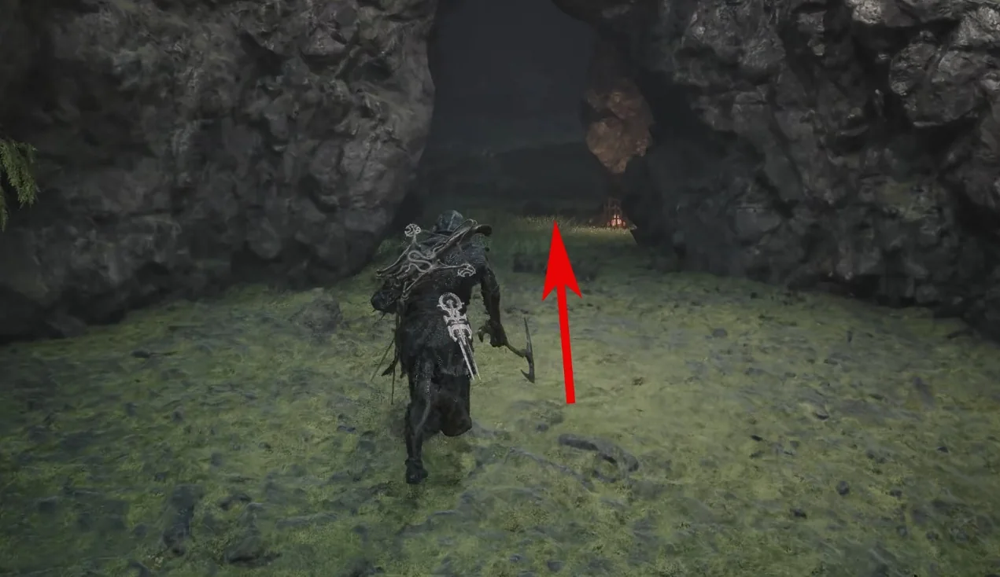
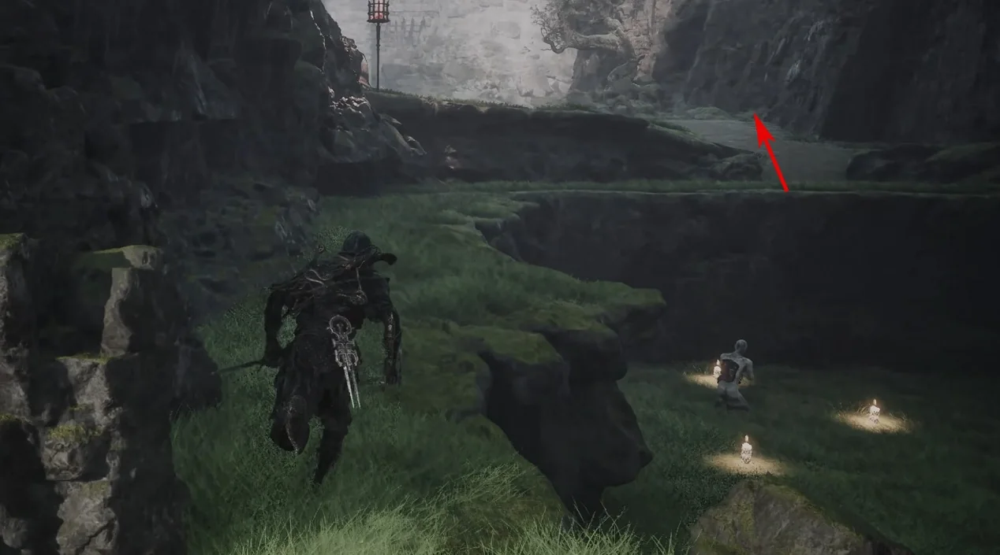
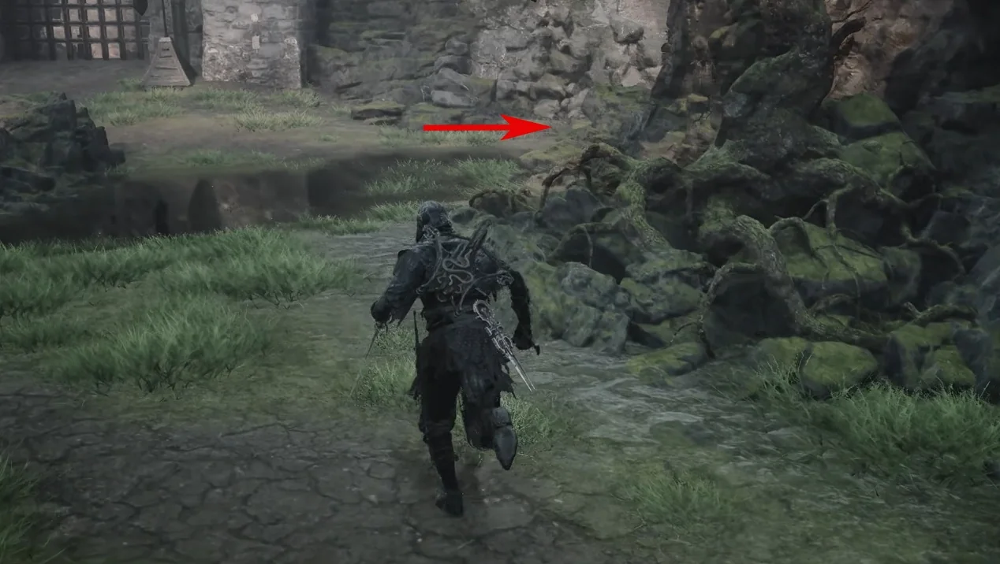
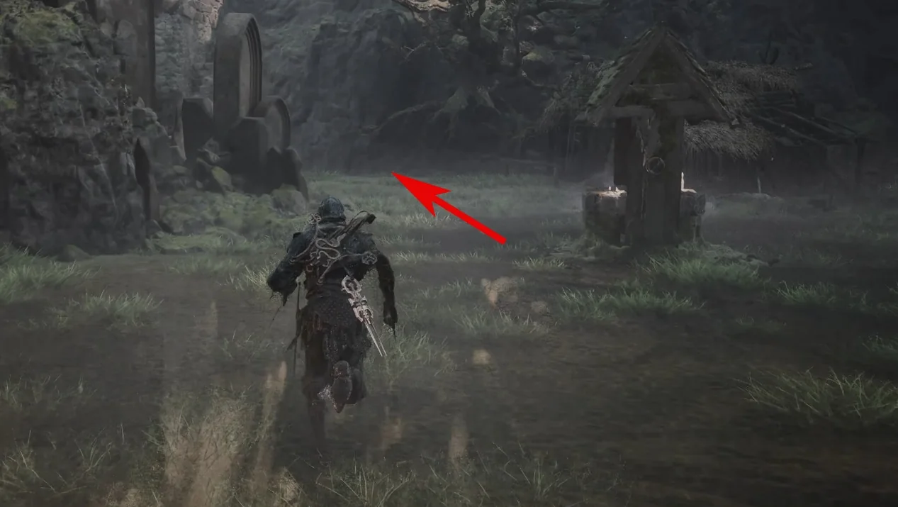
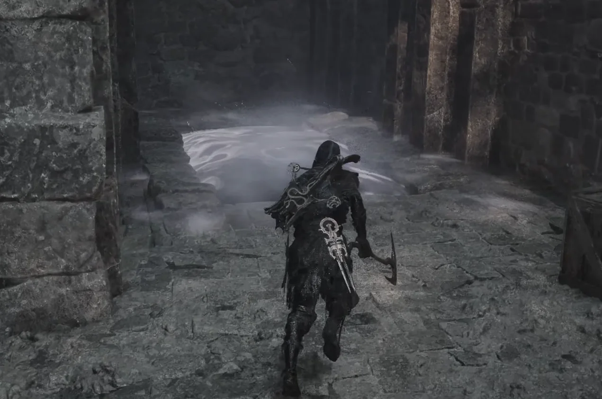
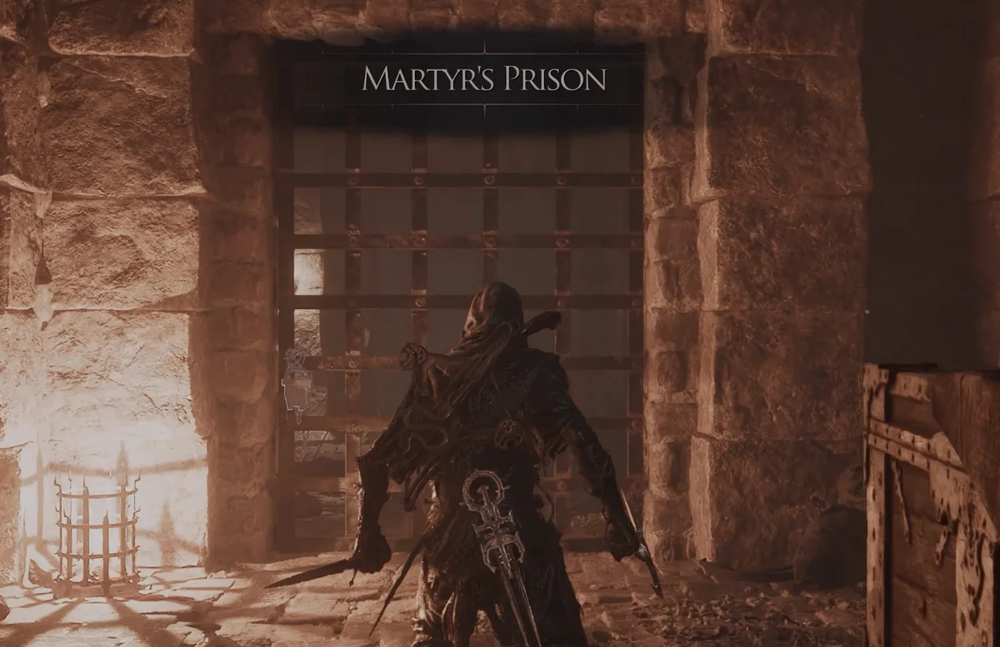
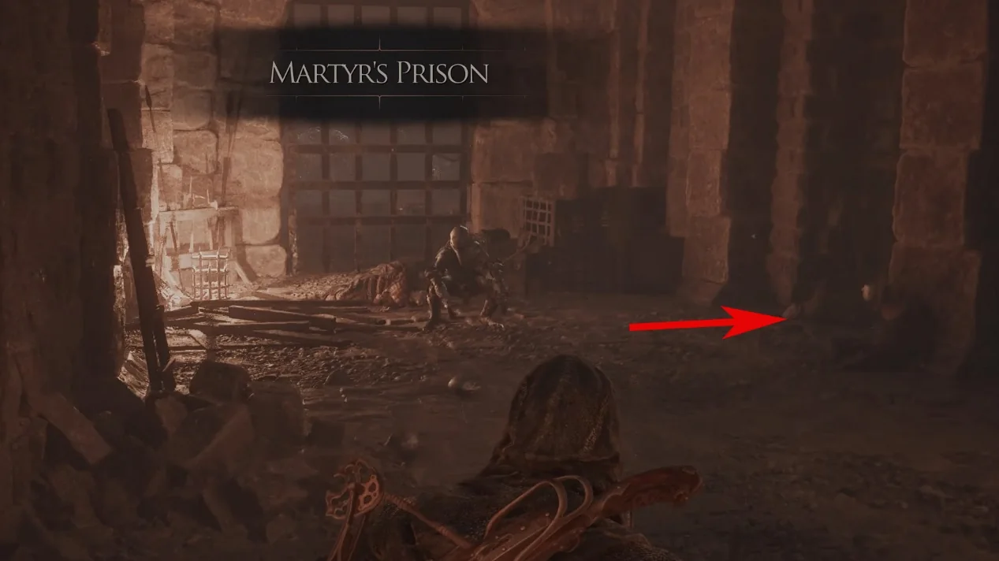
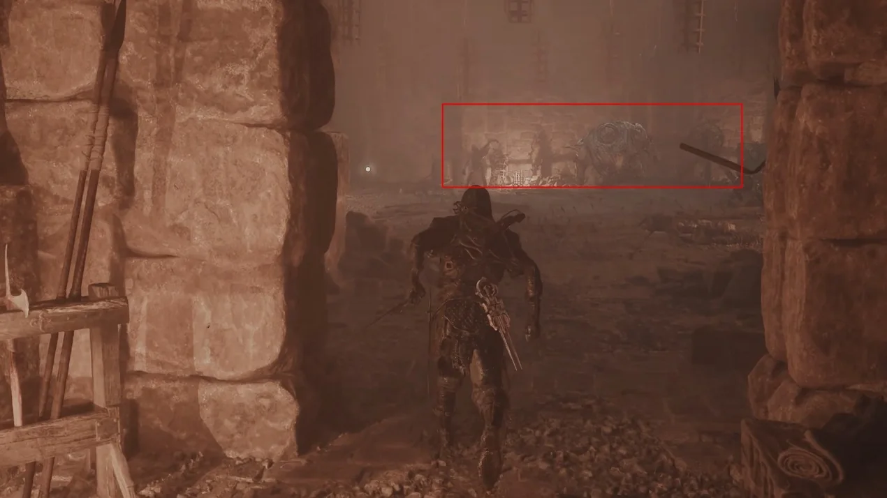
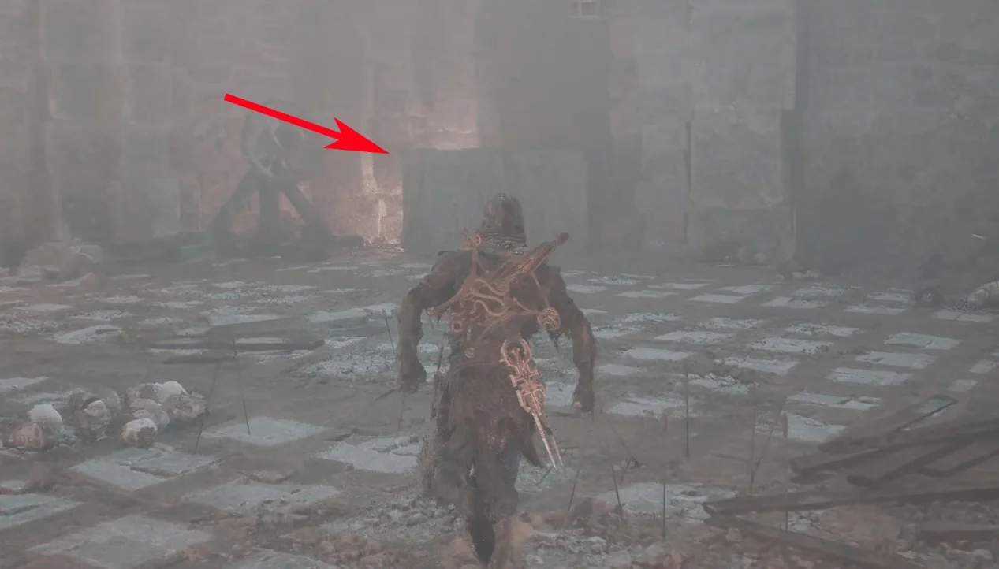

Primary weapon acquisition · Fainweald
How to get
Great Martyr's Blade
Follow this captured route from Gloomshade Grove Beacon to obtain Great Martyr's Blade.
- Region
- Fainweald
- Starting point
- Gloomshade Grove Beacon
- Base damage
- 38
 Route 01Travel to Gloomshade Grove Beacon and enter the cave.
Route 01Travel to Gloomshade Grove Beacon and enter the cave.
Route 02Follow the arrow through the cave exit.
Route 03Turn right outside.
Route 04At the next junction, turn left and follow the route to its end.
Route 05Enter the marked doorway to reach Martyr's Prison.
Route 06Defeat the enemies in the first room, then enter the arrow-marked side room and activate the switch.
Route 07Go through the newly opened main gate.
Route 08Defeat every enemy in the next room.
Route 09Break the marked boxes in the room to reveal the passage.
Route 10Follow the passage into the final chamber. Route 11Collect Great Martyr's Blade.
Route 11Collect Great Martyr's Blade.